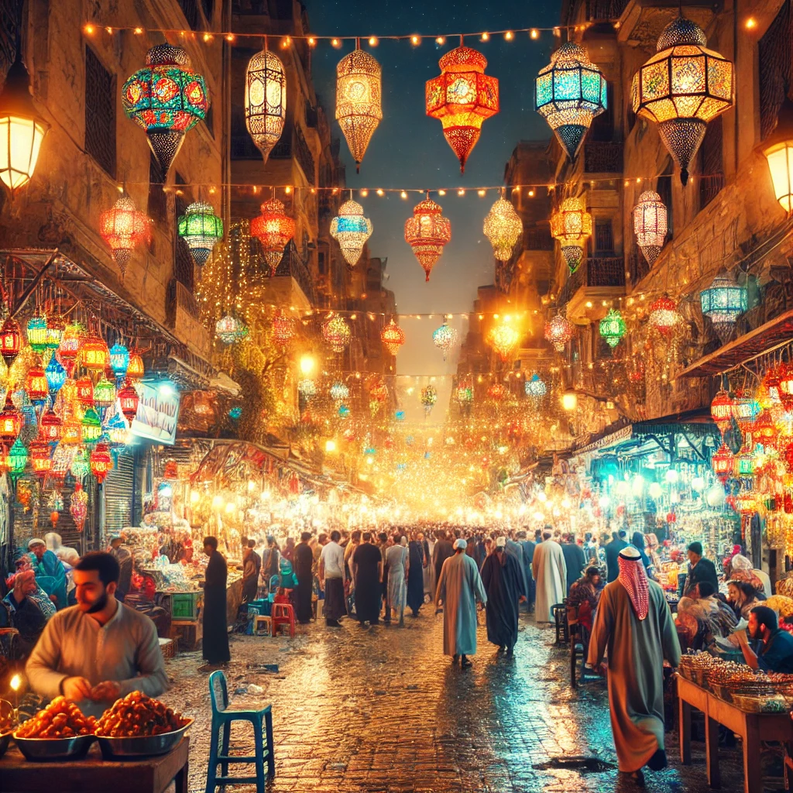
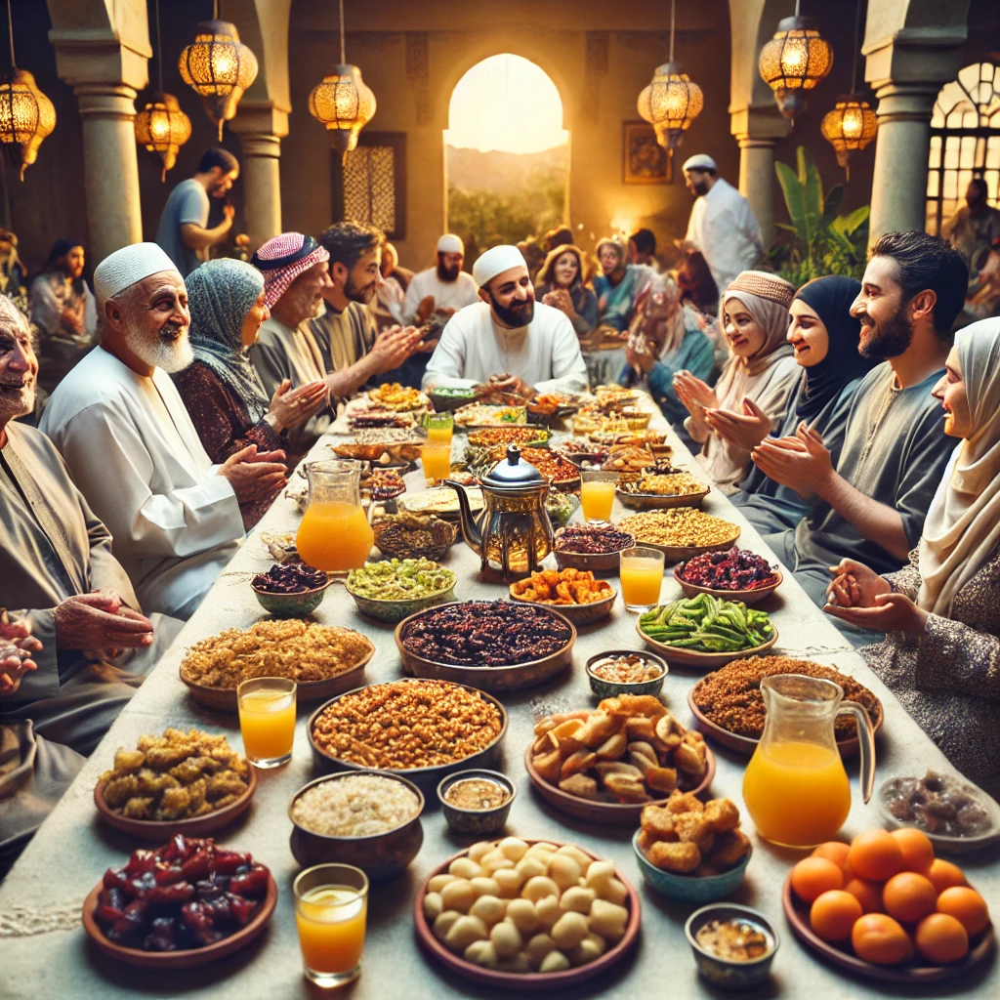
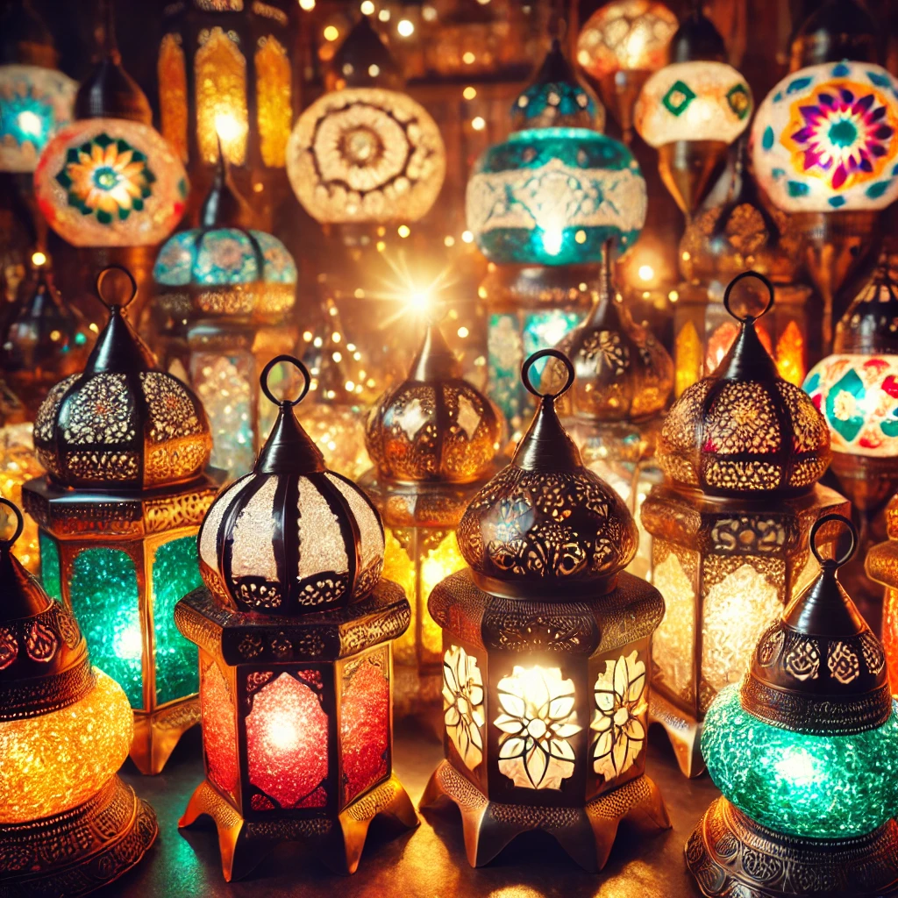
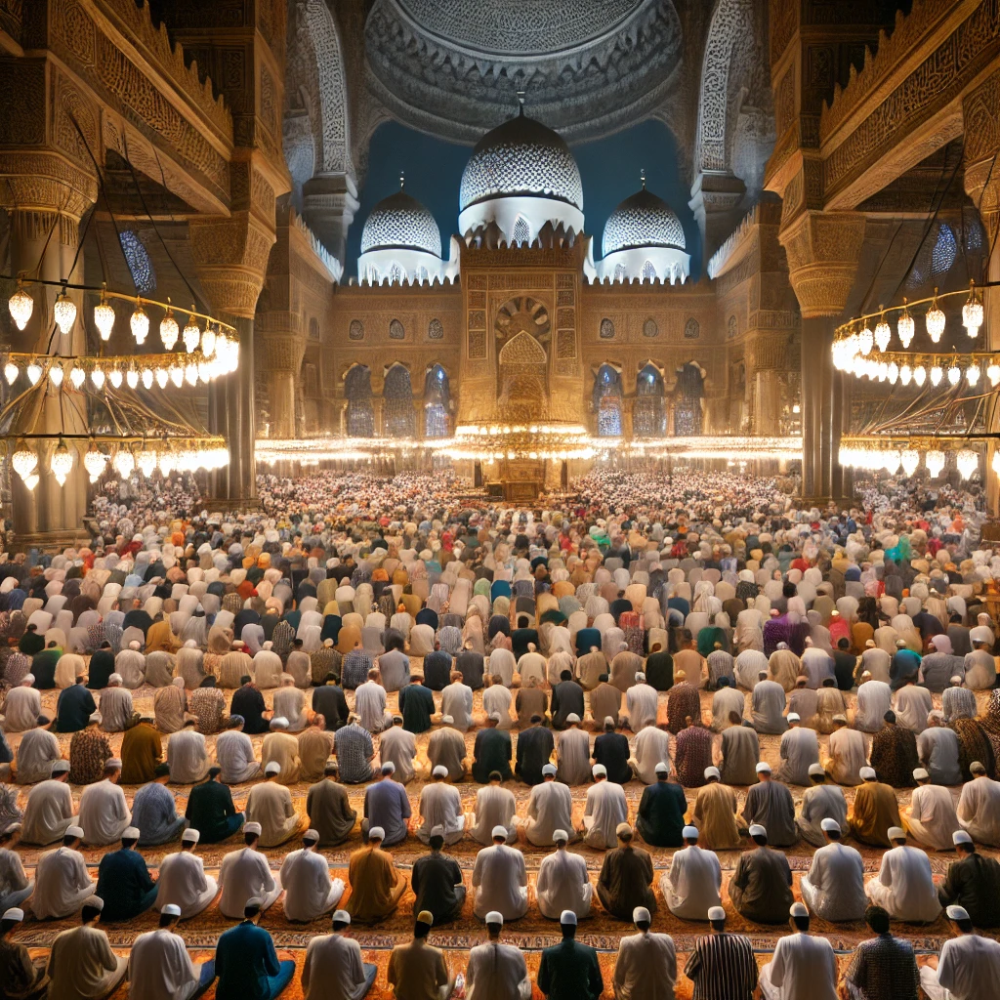
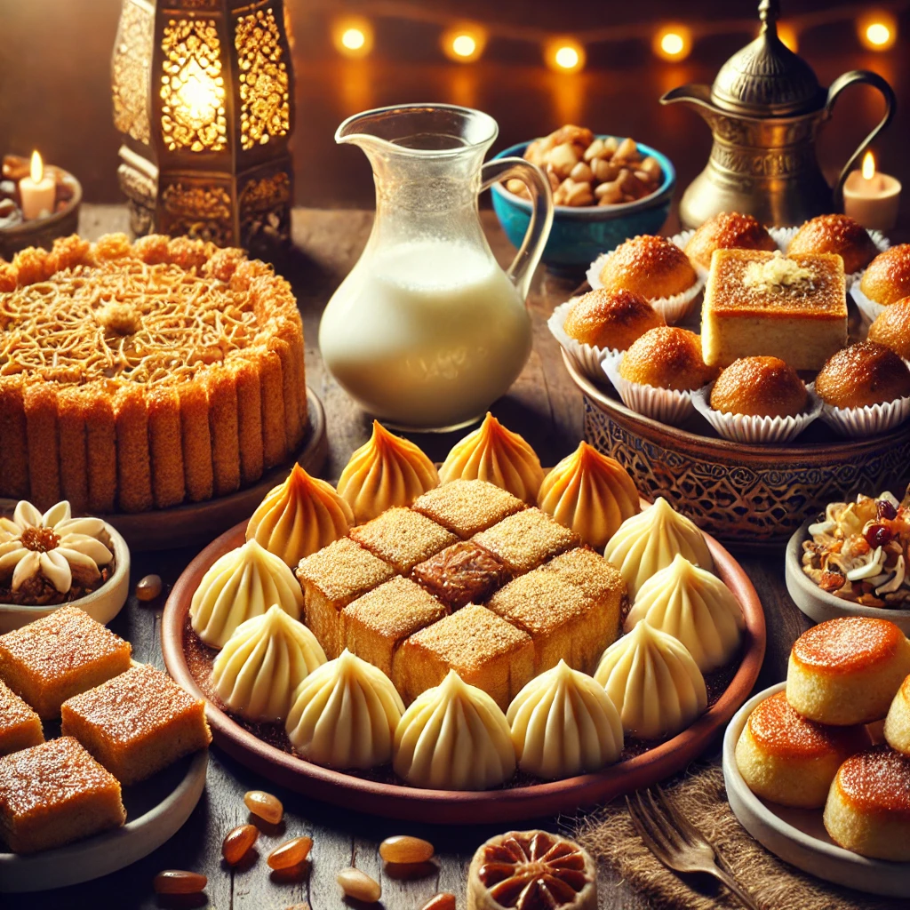
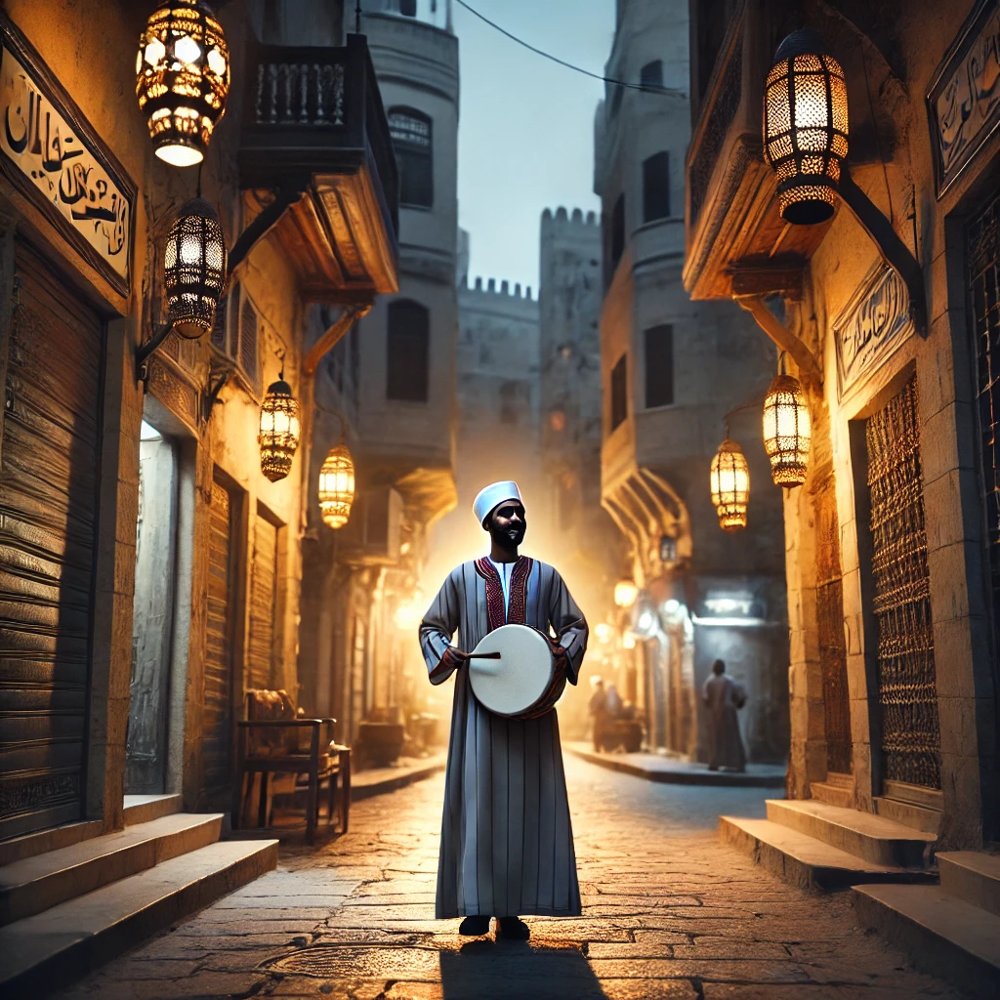

Ramadan in Egypt is a time of joy, spirituality, and strong social connections. As the holy month begins, the streets light up with colorful lanterns known as fawanees, and decorations fill every corner. Markets become lively, selling dates, sweets, and traditional Ramadan foods. Families gather for Iftar (the meal to break the fast) and Suhoor (the pre-dawn meal), while mosques overflow with worshippers performing Taraweeh prayers. The festive atmosphere extends into the late hours, with people enjoying gatherings, charity events, and special Ramadan TV shows. |
 |
In Egypt, Iftar is a grand affair where families, friends, and even strangers come together to break their fast. Streets and mosques host Mawa’ed Rahman (charity tables) offering free meals for those in need. Traditional dishes like foul (fava beans), sambousek, and khoshaf (a dried fruit mix) are commonly served. The first thing Egyptians eat is usually dates and a glass of qamar al-din (apricot juice). After Iftar, the night is filled with social visits, prayers, and a sense of unity that defines the Egyptian Ramadan experience. |
 |
One of the most iconic symbols of Ramadan in Egypt is the fanous (lantern). These beautifully crafted lanterns are made from metal and glass, painted in vibrant colors, and often feature intricate designs. They light up homes, streets, and mosques, creating a magical ambiance. Children love carrying small fawanees while singing traditional Ramadan songs. The history of the fanous dates back to the Fatimid era, where they were used to guide the Caliph during nighttime walks. Today, they remain a cherished tradition, adding charm to Ramadan celebrations. |
 |
Ramadan is not only about fasting but also about deep spiritual reflection. Every night, after Isha prayer, Egyptians gather in mosques to perform Taraweeh, special nightly prayers that bring a strong sense of community and devotion. The most famous mosques, such as Al-Azhar and Amr Ibn Al-As, fill with worshippers reciting the Quran. Some even complete reading the entire Quran during the month. Many people also increase their acts of charity, helping the poor and donating food. Ramadan in Egypt is a time of purification, generosity, and connection with faith. |
 |
Egyptians celebrate Ramadan with a variety of delicious sweets that are enjoyed after Iftar. Some of the most popular desserts include Konafa (shredded pastry with cream or nuts), Basbousa (semolina cake soaked in syrup), and Atayef (stuffed mini pancakes). These treats are prepared in homes and pastry shops, filling the air with their irresistible aroma. Families gather around the table, enjoying tea and desserts while sharing stories. Many sweets are also given as gifts, strengthening bonds between neighbors and loved ones during the holy month. |
 |
One of the oldest Ramadan traditions in Egypt is the Mesaharaty, a man who walks through the streets before dawn, beating a drum and calling people to wake up for Suhoor. This tradition dates back centuries and is still seen in many neighborhoods today. Children love running to the Mesaharaty, who often calls them by name in his wake-up chants. Though modern alarms have replaced the need for this tradition, many Egyptians cherish the nostalgic charm of hearing the rhythmic drumbeats echoing through the quiet streets before dawn. |
 |